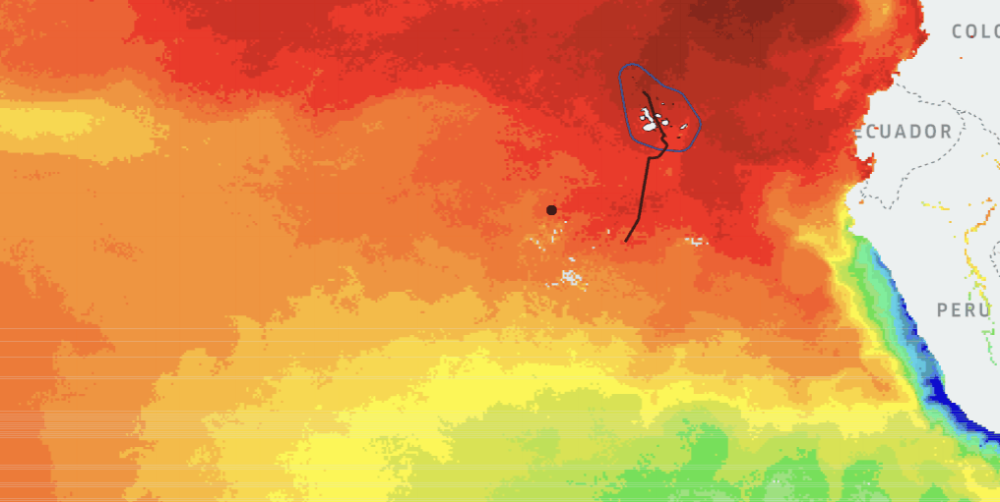
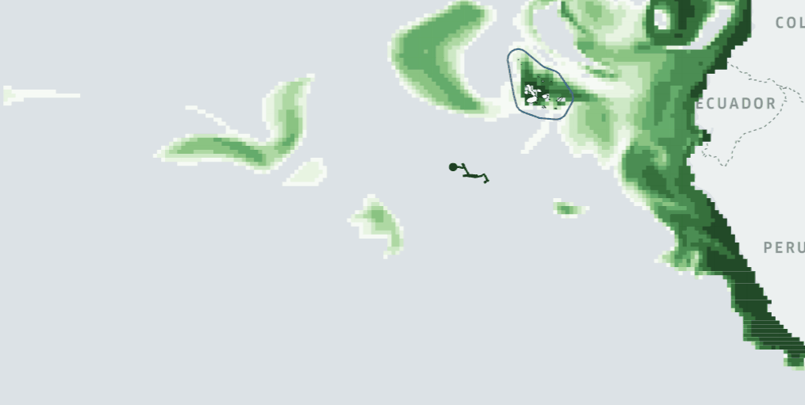
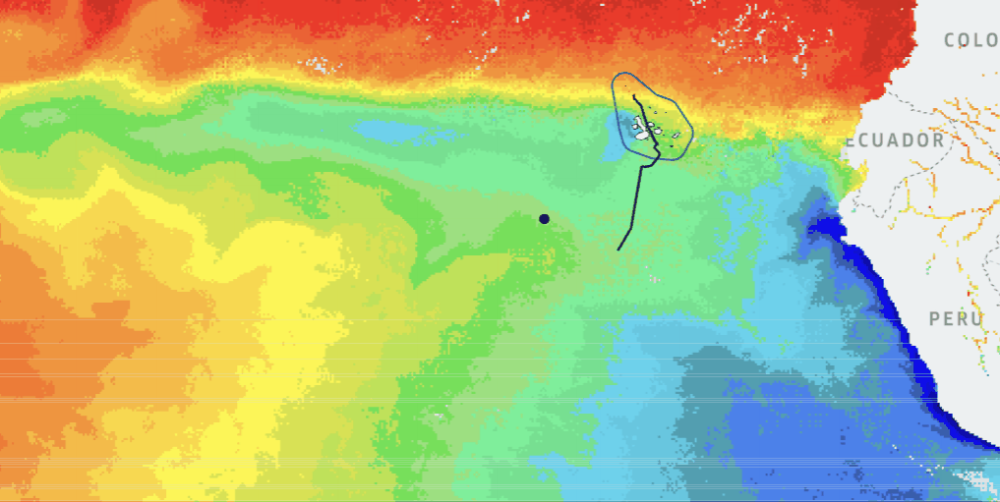
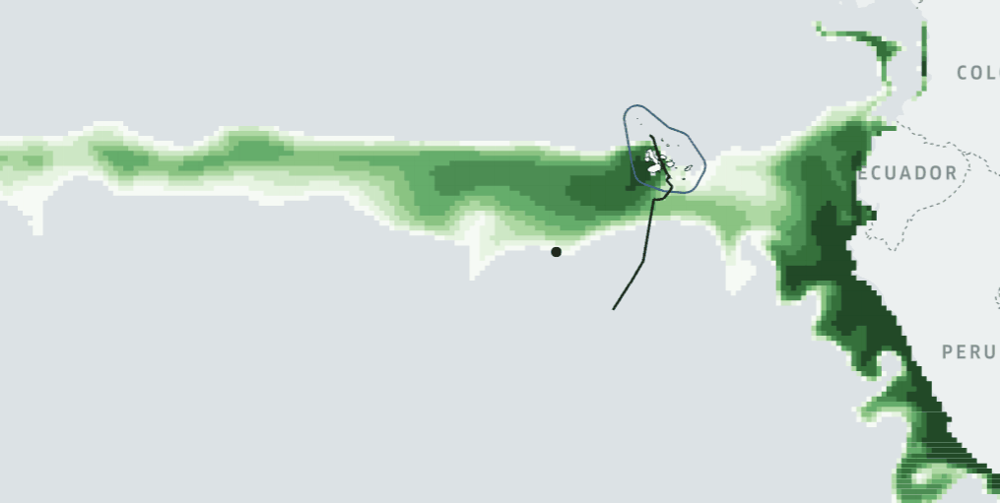

Open Tracking Data from the Galápagos
Whale shark biologging & Earth Observation
Galapagos Whale Shark Project ®
Whale shark biologging & Earth Observation
Galapagos Whale Shark Project ®
Galápagos Whale Shark Project
The Galápagos Whale Shark Project has deployed SPOT satellite tags on whale shark individuals within the UNESCO World Heritage Galápagos Marine Reserve. These tags transmit GPS positions via satellite, building a detailed picture of movement through one of the world's most biodiverse ocean ecosystems.
Using Wildlife Tracker GEO, we have made the tracking data for one tagged individual fully open-source and available for researchers, educators, and conservationists.
View on GitHub
Wildlife Tracker GEO — Capability
One of the core capabilities of Wildlife Tracker GEO is the ability to overlay animal tracking trajectories on seasonal Earth Observation layers such as Sea Surface Temperature (SST) and Phytoplankton (chlorophyll) concentration sourced from Copernicus Marine Service. Together, they reveal how marine species respond to dynamic ocean conditions across the year.




Wildlife Tracker GEO
Wildlife Tracker GEO integrates satellite tracking data with Copernicus Marine Service
environmental layers, enabling researchers to correlate animal movement with
oceanographic conditions
in any season, for any tagged species, anywhere in the global ocean.